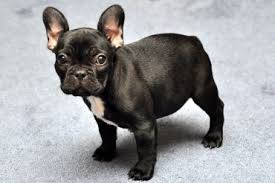

About The French Bulldog
The French Bulldog has enjoyed a long history as a companion dog.Besides being a companion, he once served as an excellent ratter, but today his job focuses on being a fabulous family friend and show dog. He's a rare dog breed, so expect to put in some time on a waiting list before you're able to bring one home.
Many Frenchies are friendly with everyone, while others are politely reserved. French Bulldogs will bark to announce visitors, but are otherwise quiet dogs.Usually peaceful with other pets (though some French Bulldogs will hunt small rodents), males may bicker with other males.The French Bulldog is quite stubborn and can be challenging to train, yet also surprisingly sensitive, remembers what he learns, and responds well to early, patient, persistent training that utilizes food motivation.Snorting, snuffling, and flatulence go with the territory of short-faced breeds.Swimming pool owners must exercise caution: Because of his squat build and heavy head, most Frenchies cannot swim and will drown if they fall into a pool.
If You Want A Dog Who:
- Is smallish but very sturdy -- not a delicate lapdog
- Has large expressive eyes
- Has a sleek easy-care coat that comes in many colors
- Is usually polite with everyone, including other pets
- Typically loves to play games and chase balls
- Doesn't need much exercise
- Doesn't bark much